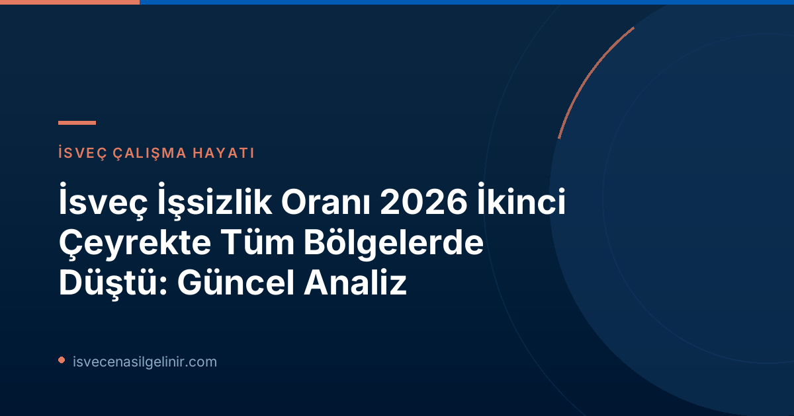

İsveç İş Piyasasında Genel Durum: İkinci Çeyrek 2026
Arbetsförmedlingen'in raporuna göre, İsveç genelinde işsizlik oranları 2026 yılının ikinci çeyreğinde önemli ölçüde azaldı. Ülkenin tüm illerinde kaydedilen bu düşüş, özellikle sonbahar 2025'ten bu yana ekonominin güçlenmesine paralel olarak devam eden olumlu bir trendin parçası. Ancak, iyileşme hızının bahar aylarında bir miktar yavaşladığı ve işsizlik seviyelerinin hala yüksek seyrettiği belirtiliyor.
Önemli İşsizlik Verileri (İkinci Çeyrek 2026)
- Kayıtlı İşsiz Sayısı: 2025'in ikinci çeyreğindeki 363.000 kişiden, 2026'nın aynı çeyreğinde 343.000 kişiye düştü.
- Göreli İşsizlik Oranı: %6,9'dan %6,4'e geriledi.
- Bu oran, 2023'ten bu yana kaydedilen en düşük seviye olarak dikkat çekiyor.
Bölgelere Göre İşsizlikteki Değişimler
İşsizlikteki en büyük düşüşler Västerbotten, Västmanland ve Gävleborg illerinde yaşandı. Bu, bölgesel iş gücü piyasalarının ekonomik canlanmaya farklı tepkiler verdiğini gösteriyor. Arbetsförmedlingen analisti Evelina Sundin, gelişmenin ülke genelinde ilerlediğini ve geçen yıldan bu yana geniş bir düşüş görüldüğünü belirtiyor. Aynı zamanda çoğu ilde iki yıllık süreçte kayıtlı işsiz sayısında azalma gözlemlendiğini de ekliyor.
Ancak Stockholm, Västra Götaland, Uppsala ve Västerbotten gibi bazı illerin işsizlik seviyeleri hala 2023 rakamlarının üzerinde seyrediyor. Bu bölgelerde işsizlik oranlarının 2027 yılına kadar 2023 seviyelerine düşmesi bekleniyor.
Uzun Süreli İşsizlikte İyileşme
Rapor, uzun süreli işsizlikle mücadele eden kişiler için de olumlu haberler içeriyor. Ülkedeki beş ilin dördünde uzun süreli işsizlik oranlarında düşüş kaydedildi. Bu durum, iş piyasasının daha kapsayıcı hale geldiğini ve uzun süredir iş arayan kişilerin de iş bulma şanslarının arttığını gösteriyor. İsveç'te yaşamak ve çalışmak için İsveç vatandaşlığı almak istiyorsanız, sverigemedborgarskapsprov.com adresinden vatandaşlık sınavı hakkında kapsamlı bilgilere ulaşabilirsiniz.
2026 İkinci Çeyrek İşsizlik Oranları (İl ve Belediyelere Göre)
| Bölge/Belediye | İşsizlik Oranı (%) | Durum |
|---|---|---|
| Gällivare (Norrbotten) | 2,0 | En Düşük |
| Kiruna (Norrbotten) | 2,3 | En Düşük |
| Öckerö (Västra Götaland) | 2,5 | En Düşük |
| Norrbottens län | 3,5 | En Düşük |
| Gotland | 3,6 | En Düşük |
| Jämtlands län | 4,2 | En Düşük |
| Perstorp (Skåne) | 13,0 | En Yüksek |
| Malmö (Skåne) | 11,3 | En Yüksek |
| Södertälje (Stockholm) | 10,6 | En Yüksek |
| Skåne län | 8,4 | En Yüksek |
| Södermanlands län | 8,0 | En Yüksek |
| Västmanlands län | 7,7 | En Yüksek |
Sonuç ve Gelecek Beklentileri
İsveç ekonomisindeki genel güçlenme ve işsizlik oranlarındaki düşüş, ülke için olumlu bir tablo çiziyor. Özellikle uzun süreli işsizliğin azalması, iş piyasasının toparlanma kabiliyetini gösteriyor. Ancak, bazı büyük şehirlerde ve illerde işsizlik seviyelerinin hala yüksek olması, bölgesel farklılıkların dikkate alınması gerektiğini işaret ediyor. Gelecek dönemde, Stockholm ve Västra Götaland gibi yerlerde 2023 seviyelerine dönüş beklentisi, iş piyasasının daha da dengeye oturacağını düşündürüyor.
İsveç'te iş arayanlar veya yaşamak isteyenler için bu veriler, ülkenin sunduğu fırsatları değerlendirmek adına önemli bir başlangıç noktası olabilir.
Referanslar:
İsveç'te Geleceğinizi Şekillendirin
İsveç'teki güncel iş piyasası hakkında daha fazla bilgi edinmek, göçmenlik süreçlerini anlamak veya İsveç vatandaşlığına giden yolda size yardımcı olacak kaynaklara ulaşmak için tıklayın.